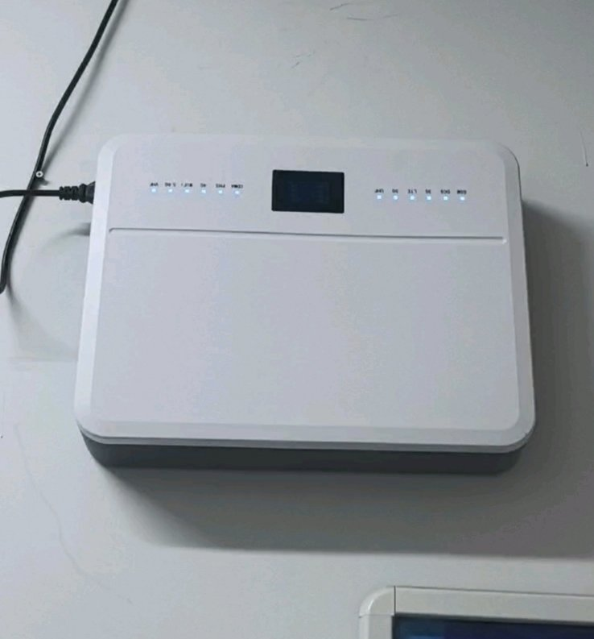

たたなこ
@tatanakots
@skyseafor 我初中的时候去过初中的计算机教室玩信号屏蔽仪，因为那天是周末所以带手机去玩的，那时候我还在用4G手机，但是一打开屏蔽仪的开关我的手机就无服务了（我亲手打开的）关掉就恢复信号
虽然不排除旧式屏蔽仪不能屏蔽n28等5G频段的说法，但是也有可能是屏蔽仪根本没开或者学校偷工减料采购了个假的屏蔽仪

sky ill
@skyseafor
毕竟参加过那么多次大型考试都被告知信号屏蔽仪会屏蔽手机信号 屏蔽仪就装在黑板上方
但其实某一次大考时我试过 那玩意儿就是摆设 在屏蔽仪底下网络流畅的飞起 看片都不卡顿
不敢想象高考作弊成本有多低 草台班子 https://t.co/isqyVndLvK